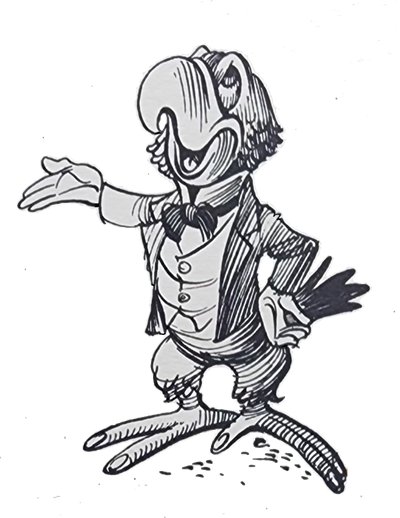
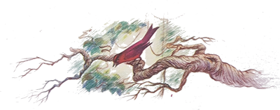
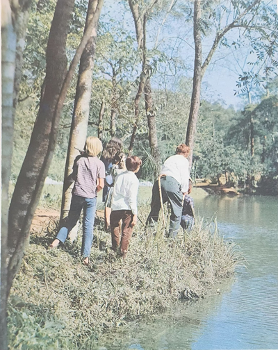
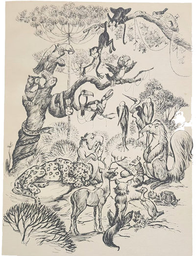
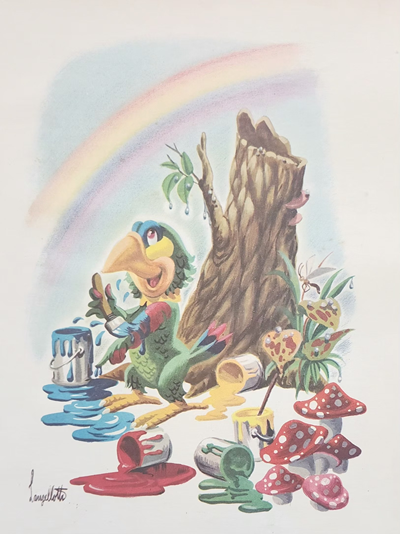
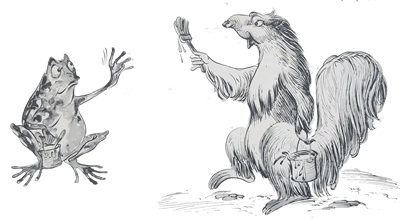
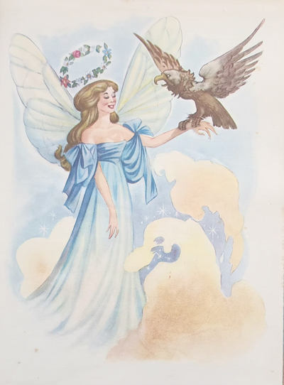
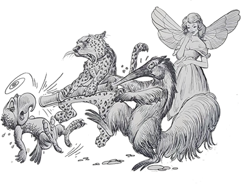
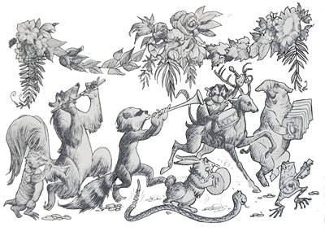

Puxa “viuda”! – gritou o Arrelia, arregalando desmesuradamente os olhos, completamente tomado pela surpresa. O que aconteceu a esse menino? Virou louro?
O motivo do susto do Arrelia era uma enorme laranja podre que se espatifara na cabeça de Carlinhos. Uma parte da laranja ficara equilibrando-se na cabeça do menino como se fosse um chapéu enquanto caldo e sementes lhe escorriam tristemente pelo rosto e pescoço.
- Eu bem que não queria vir a este pomar! – reclamava Carlinhos, choramingando, de olhos fechados, sem nada fazer.
- Que “laranjauda” levou o coitado! – disse o Arrelia depois de haver descoberto qual o objeto estranho que havia atingido a cabeça de Carlinhos.
As outras crianças, passada a primeira surpresa, começaram a rir do triste aspecto do companheiro.
Carlinhos ficou furioso:
- Ainda riem do meu estado? Arranjem um pano para eu me limpar!
- Quem? Eu, hein? – disse Iberê, afastando-se. Você está tão bonitinho assim . . . Não vou estragar um quadro tão lindo, não. E depois, onde é que vou arranjar um pano?

Ninguém tinha um pano para livrar o coitado daquela angústia. Aí o Arrelia avançou solenemente, tirou seu respeitável lenço e tratou de livrar o menino de uma vez por todas daquele sofrimento. Tão logo Carlinhos conseguiu abrir os olhos, uma voz estranha fez-se ouvir: “Bobo, menino bobo!”
- Arrelia! – gritou Carlinhos. Eles estão caçoando de mim outra vez!
- Deixem o pobre em paz – pediu o Arrelia. Depois daquela “laranjauda”, ele merece um pouco de carinho!
As crianças afirmaram que não tinham dito nada.

- Então foi algum “fantausma” . . . – murmurou o Arrelia.
Novamente soou a estranha voz: “Bobo, menino bobo!”
Notaram que a voz vinha de cima. Começaram a procurar quem estava falando. Todos os olhos começaram a vasculhar o alto das árvores. Nada.
- Pelo sim, pelo não, é melhor nós irmos indo embora – resolveu o Arrelia.
Ninguém deixou de concordar com ele. Carlinhos, então, foi o que mais se entusiasmou:
- Isso mesmo! Vamos cair fora que esse negócio não está cheirando bem.
Ouviram as mesmas palavras pela terceira vez, e o Arrelia, olhando novamente para o alto, conseguiu surpreender quem estava falando:
- Olhem lá! Vejam só! Quem diria! – exclamou ele, apontando para o alto de uma laranjeira.
As crianças, assustadas, procuraram ver o que era que ele estava apontando. Nenhuma conseguiu ver nada.
- Ali! – insistiu ele. Naquele galho! Estão vendo agora? É um papagaio!

Finalmente conseguiram ver o louro, que se divertia fazendo malabarismo num dos galhos da laranjeira.
- Vejam só! Quem diria! – repetiu Iberê. Um papagaio!
- Aposto que foi ele que me atirou aquela laranja – resmungou Carlinhos, olhando com a cara mais feia que conhecia para o alegre papagaio.
- É bem possível – respondeu o Arrelia. Parece que ele não vai muito com a sua “caura”.
A descoberta do papagaio provocou um tumulto infernal entre as crianças. Queriam pegá-lo de qualquer maneira.
- Ele fugiu de alguma casa e ainda se lembra do que aprendeu – disse o Arrelia.
- Vamos pegá-lo? – propôs Iberê com entusiasmo. Como é bonito!
- Está brincando? – surpreendeu-se o Arrelia. Quem é que vai subir nessa árvore cheia de espinhos?
- Eu subo! – respondeu o menino. Vou e volto num minuto!
- Acho que não convém! “Bicauda” de papagaio não é brincadeira! – avisou o Arrelia.
Tanto Iberê insistiu que o Arrelia concordou em deixa-lo subir, não antes, porém, de dizer-lhe:
- Vá com “cuidaudo”, então. Se achar que ele é “braubo”, não insista. Trate de descer logo.
Ao som da palma de seus companheiros, inclusive o Arrelia, Iberê começou a escalada. Evitando cuidadosamente os espinhos, aproximou-se do papagaio, que o olhava com curiosidade. Estendeu-lhe a mão: “Dá o pé, louro. Dá o pé”. O papagaio não deu o pé mas deu o bico. Tão logo a mão do menino roçou-lhe as pernas, o louro transformou-se. Gritando furiosamente, tentou bicar a mão do menino. Iberê escapou por pouco e desceu dez vezes mais rápido do que havia subido.
- Está louco! – gritou ele. Aquilo é uma fera! Olhem o que ganhei! – e exibiu alguns arranhões causados pelos espinhos.
- Até que foi pouco! – disse-lhe o Arrelia. Se você tivesse levado uma “bicauda” daquele bico torto, estaria chorando agora!
Bufando de raiva, p menino procurou com os olhos o seu raivoso inimigo e gritou:
- Seu bico torto de uma figa! Venha aqui embaixo! Venha! Que lhe mostro!
- Não “fauça” isso! – pediu o Arrelia, juntando as mãos em atitude de súplica. Se ele ouvir você chamá-lo de bico torto, ficará louco da “viuda” e poderá atacar-nos! Nenhum papagaio gosta de ser chamado de bico torto!

- Isso eu não sabia! – exclamou o menino, completamente espantado. Sempre ouvi falar que o fraco dos papagaios são os pés!
- De fato, eles não gostam muito dos pés que possuem. Mas isto não é “nauda” perto da raiva que tem por causa do bico torto!
- É verdade mesmo, Arrelia?
- É claro! Uma vez corri de uma cidade a outra por haver chamado um papagaio de bico torto!
- Mas por que isso? Por que eles tem tanta raiva de seu bico?
- Porque o que aconteceu foi muito humilhante para a família dos papagaios.
Continuando o passeio pelo belo pomar, o Arrelia começou a contar às crianças por que os papagaios têm o bico torto:
- Foi no tempo em que os animais e as aves falavam. Portanto há muitos anos.
De todos os bichos e aves da floresta, o Papagaio era o mais tagarela. Quando desejava obter uma coisa, punha-se a falar com tanto entusiasmo que quase sempre a obtinha.
Naquele tempo a floresta era muito monótona pois era toda branca. Nem as folhas, nem as flores, nem os frutos tinham as cores que tem hoje: tudo era branco. O Papagaio também era inteirinho branco, menos os pés e o bico que eram escuros como hoje, mas um branco triste, acinzentado, e todos caçoavam dele dizendo-lhe que não tomava banho, o que era mentira pois o coitado lavava-se a toda a hora.
As aves e os bichos acabaram por ficar cansados daquela brancura sem fim. Não tinha graça. Queriam outras cores. Mais vida, mais alegria. Resolveram fazer uma assembleia para tratar do assunto. Como era seu costume, o Papagaio tomou conta da reunião. Falou tanto que muitos bichos e aves dormiram. Depois de várias horas de conversa fiada, Dona Lebre interrompeu-o:
- Afinal, amigo Papagaio: no que ficamos? Ouvi muita conversa mas nenhuma solução.
O Papagaio embatucou. Era mesmo “verdaude”. Falara tanto que não dissera nada. Aí o Tamanduá, que até então estivera calado, propôs:
- Por que não pintamos toda a floresta?
- É muito boa! E onde vamos buscar as tintas? – disse o Papagaio com arrogância.
- Poderíamos mandar o compadre Gavião até às nuvens onde mora a deusa da floresta. Ele lhe transmitiria o nosso pedido, e se ela concordasse, ele mesmo poderia trazer-nos as latas de tinta.
Foi delirantemente aplaudido. O Papagaio, porém, não gostou. Ficou louco de inveja, e naquele momento jurou vingar-se do Tamanduá.
Logo que o dia seguinte amanheceu, compadre Gavião partiu em direção às nuvens. Custou a convencer a deusa da floresta a entregar-lhe as tintas. Ela receava que as aves e os animais fizessem uma confusão de cores e acabassem por estragar a mata. Após muita insistência, o Gavião conseguiu convencê-la. Desceu com a boa nova e já com uma lata de tinta. Foi intensa a alegria que causou aos seus companheiros. Menos ao Papagaio. Seria preciso, porém, fazer ainda muitas viagens até trazer toda a tinta necessária. Resolveram, pois, escolher um deles para guardar as respectivas latas. Novamente o Papagaio, à custa de muita conversa, conseguiu obter o que desejava e tornou-se o guarda das tintas.

Uma a uma as latas foram sendo trazidas e entregues ao Papagaio. Qunado já era bem grande a variedade de cores, ele pensou: “Por que usar essas tintas para pintar a floresta? Vou usá-las para pintar-me! Isto sim! Ninguém poderá dizer mais que não tomo banho!” Para escolher melhor as cores, começou a derramar quase todo o conteúdo das latas no chão e, quando gostava, aproveitava o restante para pintar-se. Se não gostava, acabava por derramar o resto também. Fez uma sujeira “daqueulas”.
Quando, para terminar, ia pintar o bico e os pés, o Tamanduá descobriu o que havia acontecido. Foi um pandemônio. As aves e os bichos ficaram por conta. Que desperdício! O Gavião até chorou. Depois de tanto trabalho! Queriam dar uma surra no sem-vergonha! Como não? Mas que ele estava bonito, estava. Todo colorido! Só não apanhou poruqe compadre Sapo interveio calmamente, com sua voz grave e pausada:
- Ele não tem culpa! Portanto não deve ser punido.
Todos ficaram surpresos. Então ele não tinha culpa? Não devia ser punido? O Papagaio ficou todo orgulhoso. Alguém tinha compreendido afinal a sua nobre intenção. Mas o seu orgulho teve fim quando o Sapo completou:
- Sabemos que ele é um fútil, um cabeça-de-vento! Por que fomos encarregá-lo de coisa tão importante? Por acaso não temos companheiros com real senso de responsabilidade como, por exemplo, o Tamanduá?
Ouviram-se palmas, gritos, assobios. Outra vez o Papagaio sentiu ódio do Tamanduá. Resmungou, fungou louco de raiva. Dona Lebre falou:
- Ficarmos perdendo tempo aqui não adianta nada. Façamos outra assembleia. Será o único modo de encontrarmos uma solução.
O Papagaio, já esquecido de sua culpa, gritou:
- Isso mesmo! Para que tanta complicação? Façamos outra assembleia!
Levou uma vaia de arrepiar as penas. O Tamanduá sugeriu:
- Se vamos fazer nova reunião, sugiro que o Papagaio fique bem longe. Ele só serve para provocar confusão.
Todos acharam muito boa a ideia. Muitas palmas, muitos vivas. Quem não gostou foi o Papagaio, é evidente. O Tamanduá que esperasse. O seu dia chegaria. Foram embora, deixando o pobre do louro sozinho.
Um vez reunidos, começaram a procurar solução para o caso que o Papagaio criara.
- Olhem – pediu a Raposa. O melhor seria o Gavião ir falar novamente com a deusa da floresta. Ela haveria de compreender e por certo nos enviaria mais tintas.
O Gavião apavorou-se:
- Eu? Não, eu não vou mais! Tenham dó de mim! Se da primeira vez ela custou a concordar, imaginem agora!
Pensaram em mandar alguma outra ave mas nenhuma possuía garras fortes como as do Gavião para poder carregar a tinta. Após muitas súplicas de todos, ele concordou em ir falar novamente com a deusa.
Chegou às nuvens e, meio sem jeito, contou à deusa o que havia acontecido. Depois pediu mais tintas.
- Então o Papagaio fez tal coisa? Ele sempre foi de amolar a peciência, mas agora . . . já é demais. Um dia ou outro vou até lá dar-lhe uma lição. Quer dizer que o danado mudou de cor?

- Se mudou! Está todo colorido! Ninguém o reconhece mais! Só escaparam os pés e o bico.
- Agora, quanto às tintas – tornou a deusa – receio que não seja possível. Estão no fim, amanhã vai chover w terei de pintar um arco-íris.
Tanto o Gavião implorou que a deusa lhe entregou algumas latas de tinta, não sem dizer-lhe antes:
- Olhe lá. É a última vez que faço isto. Não haverá outra vez. Cuidado com o Papagaio.
- Sim, senhora. Fique sossegada que não haverá perigo!
Outra vez o Gavião começou a fazer diversas viagens às nuvens. Desta vez ficou encarregado o Tamanduá de guardar as latas de tinta.
Quando as viagens terminaram, os bichos e as aves começaram a pintar a floresta. Pouco antes, o Papagaio procurou o Tamanduá e pediu-lhe muito humildemente um pouco de tinta para pintar o bico e os pés. O Tamanduá, muito cônscio de seu dever, recusou-se a fazer-lhe a vontade:
- Nem fale nisso, compadre! Os outros confiaram em mim e não vou decepcioná-los, não! De jeito nenhum!
- Mas só um pouquinho! Um pouquinho só! Se tivesse aí uma tinta dourada, hein? Olhe que eu ficaria bem de bico e pés dourados, não é verdade?
- Vá saindo, compadre. Que tinta dourada qual nada! Daqui não sai nenhuma gota!
O Papagaio foi embora mais furioso do que nunca. Era hora de vingar-se do Tamanduá. Se era! E dos outros também. Dos outros era fácil. Bastaria recusar-se a trabalhar quando pedissem sua ajuda para pintar a floresta. Quanto ao Tamanduá, pensaria numa coisa bem mais marcante. Que esperasse.
Bem, os bichos e as aves começaram a pintar a floresta. Passou-se um dia, dois, e ninguém havia procurado o Papagaio, como ele esperava. Que decepção. Assim ele não podia vingar-se!
Depois de mais alguns dias de espera, o Papagaio resolveu dar uma chegadinha para ver o que estava acontecendo. Que “atividade”! Todos trabalhando! Ele chegou mais perto. A comadre Raposa deu com ele e gritou:
- Ih, gente! Vejam quem está aqui! Podem ficar sossegados que vamos ter confusão!
O Sapo aproximou-se e, com sua voz pausada e grave, disse-lhe:
- Compadre Papagaio: por que não ficou descansando em sua casa, deixando que ficássemos descansados?
- Mas como vocês vão pintar a floresta sem o meu auxílio, sem a minha orientação para a escolha das cores?

- Não se preocupe, meu amigo, que tudo está saindo muito bem apesar de não contarmos com sua preciosa orientação – respondeu o Sapo com um ar de deboche.
O Tamanduá, que estava trabalhando perto, ouviu toda a conversa, aproximando-se e disse:
- Ouça o meu conselho, compadre Sapo: continue o seu trabalho e não preste atenção à conversa desse nosso amigo senão você não fará mais nada a não ser ouvir suas vãs palavras.
- Tem razão, compadre – respondeu o Sapo, continuando a pintar calmamente o tronco de uma árvore.
O Papagaio disse uma porção de palavras que ninguém compreendeu e saiu pisando torto. Aquele compadre Tamanduá era metido mesmo. Mas que esperasse. Não custava nada.
Quando a floresta estava quase toda “pintauda”, as aves e os bichos tiveram uma agradável surpresa: foram visitados pela deusa, o que raramente acontecia. Ficaram atrapalhados, dando tudo para que ela ficasse bem impressionada.
- Que trabalho magnífico vocês estão fazendo! – exclamou ela completamente entusiasmada. Que combinação de cores maravilhosa! Nem eu teria feito coisa tão bonita!
Ficaram todos encabulados de satisfação. A Raposa propôs ali mesmo que fosse realizada uma grande festa para comemorar o importante acontecimento:
- Minha gente! Jamais acontecerá algo maravilhoso como isto! Propondo que tal acontecimento fique marcado para sempre em nossa memória com uma grande festa!
Percebendo que todos a ouviam com atenção, menos o Papagaio, que agora evitava ostensivamente encontrar os outros, a Raposa elevou mais a voz:
- Façamos uma grande festa! Como jamais houve e jamais haverá!
Foi aplaudida delirantemente.
- E sabem quem será nossa convidada de honra? A nossa bondosa deusa, que nos proporcionou esta floresta maravilhosa, onde agora, dentro de tanta beleza, seremos realmente felizes!
Ouviram-se aplausos, gritos, um barulho infernal! A deusa ficou tão sensibilizada que até chorou.
Marcaram o dia da festa, a deusa voltou às nuvens e a vida continuou.
Só o Papagaio não estava contente. E não era para menos, Tinha sido posto à margem de toda aquela alegria. Andava de cara feia, resmungando que dava “meudo”.
Terminado o trabalho, os bichos e as aves começaram os preparativos. Limparam e enfeitaram uma enorme clareira onde seria realizado o baile. Ficou um encanto, toda rodeada de festões de samambaia e flores das mais variadas cores. Noutra clareira, bem menor, porém enfeitada também com capricho, estavam os comes e bebes.

Trataram de organizar a orquestra. Vários bichos e várias aves foram convidados, inclusive o Tamanduá, que sabia tocar flauta. E o Papagaio? Havia sido mesmo completamente esquecido. Nem para a orquestra foi convidado. E olhem que era um bom cantor! Quando ele soube, ficou desesperado. Tudo podia passar; menos o Tamanduá e ele não. Era demais. Arquitetou um plano terrível e tratou de realiza-lo. Saiu pela floresta, foi a um bambuzal, cortou um pedaço de taquara grossa e preparou uma flauta.
O Arrelia fez uma pausa e disse às crianças:
- Agora, para vocês compreenderem o final da estória, é preciso que saibam que nem o Papagaio tinha o bico torto como hoje, nem o Tamanduá tinha o focinho em forma de canudo como tem.
- Não tinham? – surpreendeu-se Jaci. Como eram então?
- O bico do Papagaio era o mais lindo de todas as aves; e o focinho do Tamanduá era o mais bonito de todos os bichos. O bico do Papagaio era comprido, bem feito, delicado, e o focinho do Tamanduá era grosso, provido de possante boca.
Foi por causa disto que o Papagaio teve a ideia. Transformaria o focinho do Tamanduá numa coisa ridícula, e ele, o Papagaio, ficaria sendo o único a merecer elogios.
Levou, pois, a flauta de taquara e começou a procurar o Tamanduá.
- Sabe o que é isto, compadre? – perguntou o Papagaio assim que o encontrou.
- Parece ser uma flauta. Só que é muito grossa – respondeu o Tamanduá bastante interessado.
- De fato é uma flauta – confirmou o Papagaio com toda a pose. Mas é uma flauta mágica. Possui o mais belo som do mundo! Foi-me presenteada pela deusa da floresta. Como, porém, não toco flauta e soube que o compadre vai fazer parte da orquestra, quero que a aceite como um presente meu.
O Tamanduá ficou desvanecido:
- Aceito com prazer! Muito obrigado! Assim serei o maior músico da orquestra!
- Só, compadre, que é uma flauta diferente. Deve ser tocada com o focinho ou bico dentro. É o único modo de conseguir tocá-la. É assim, quer ver?
O Tamanduá ergueu o focinho para que o Papagaio colocasse a flauta, que de flauta não tinha “nauda”. Com um violento safanão do Papagaio, o focinho do Tamanduá sumiu dentro da taquara. O pobre ficou aflito. Fez de tudo para arrancar aquele incômodo tubo mas foi em vão. O Papagaio ria como se estivesse louco e atraiu os outros habitantes da floresta. Todos ajudaram, menos o Papagaio, é claro, mas a taquara não saía mesmo. O Gavião foi buscar a deusa para resolver aquela aflitiva situação. Ela veio e, com a ajuda dos bichos mais fortes, conseguiu arrancar o tubo.
O tubo saiu violentamente, acertando em cheio o bico do Papagaio, que ria da cena que causara, e achatou-o, deixando-o assim como é até hoje.
A deusa queria saber o que havia acontecido mas falavam todos de uma vez e não foi fácil a ela compreender o que diziam.
Por fim tudo ficou esclarecido. O Tamanduá, mal podendo falar por causa de seu focinho ter ficado muito fino, implorava à deusa para fazê-lo voltar ao normal. O Papagaio também implorava que dava pena. A deusa, porém, não estava para brincadeira.
- Ouçam todos vocês! – pediu ela aos bichos e às aves. O Tamanduá ficará sempre assim para pagar a sua vaidade, pois queria ser o maior músico da orquestra. Também assim ficará o Papagaio para lembrar-se do preço da sua vingança. E como tudo foi causado por falarem sem pensar, nenhum de vocês vai falar mais.
- Por favor! Não faça isso! – pedia uma ave.
- Tenha pena de nós! – suplicava um bicho.
Foi uma choradeira tremenda. A deusa, porém, não prestou a mínima atenção e continuou:
- Assim evitaremos outros acontecimentos iguais a este. Apenas o Papagaio, que merece um castigo maior, poderá continuar a falar. Mas não o que ele pensar e sim o que ouvir. Já que ele queria ser um tagarela, agora será um tagarela para sempre.
E não querendo saber de mais “nauda”, a deusa voltou às nuvens.
